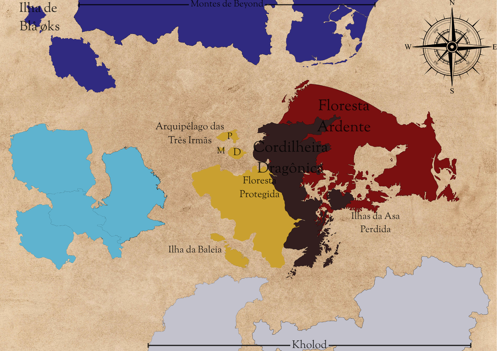

✦
Ilha · Noroeste
Ilha de Blå øks
Em breve — texto sobre a Ilha de Blå øks...
Um registro dos lugares que marcam o Reinado de Polaris — de florestas ardentes a ilhas esquecidas pelo tempo.

Em breve — texto sobre a Ilha de Blå øks...
Em breve — texto sobre os Montes de Beyond...
Em breve — texto sobre o Arquipélago das Três Irmãs, e sobre as ilhas P, M e D...
Em breve — texto sobre a Cordilheira Dragônica...
Em breve — texto sobre a Floresta Ardente...
Em breve — texto sobre a Floresta Protegida...
Em breve — texto sobre a Ilha da Baleia...
Em breve — texto sobre as Ilhas da Asa Perdida...
Em breve — texto sobre Kholod...
As terras em azul-claro e lavanda a oeste e ao sul ainda não têm nome ou história registrada. Em breve — texto sobre essas regiões...